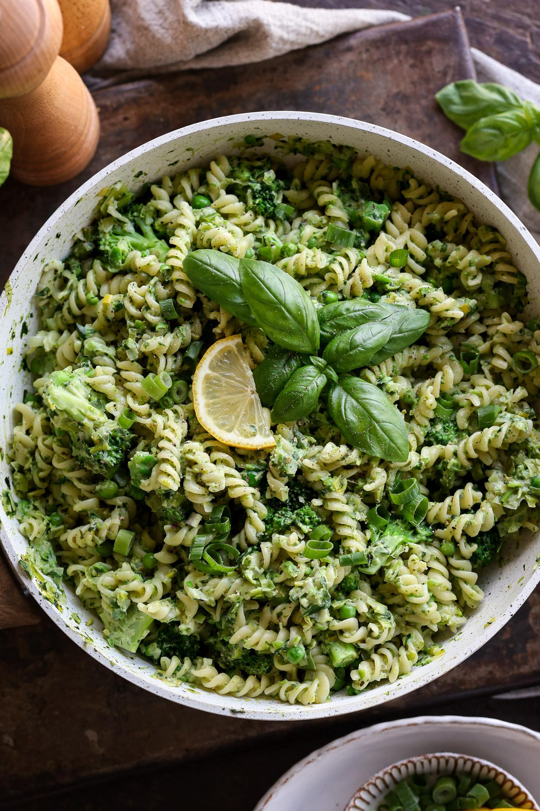

Pesto Protein Pasta

Ingredients
- Free to Eat beet pasta
- Vegan canned pesto (1/2 jar)
- Drizzle of tahini and hemp seeds
Instructions:
- Prepare the pasta in salted water
- When al dente, pour pesto sauce over it and stir
- Top with a drizzle of tahini and a sprinkle of hemp seeds-- this will give it a really nice texture